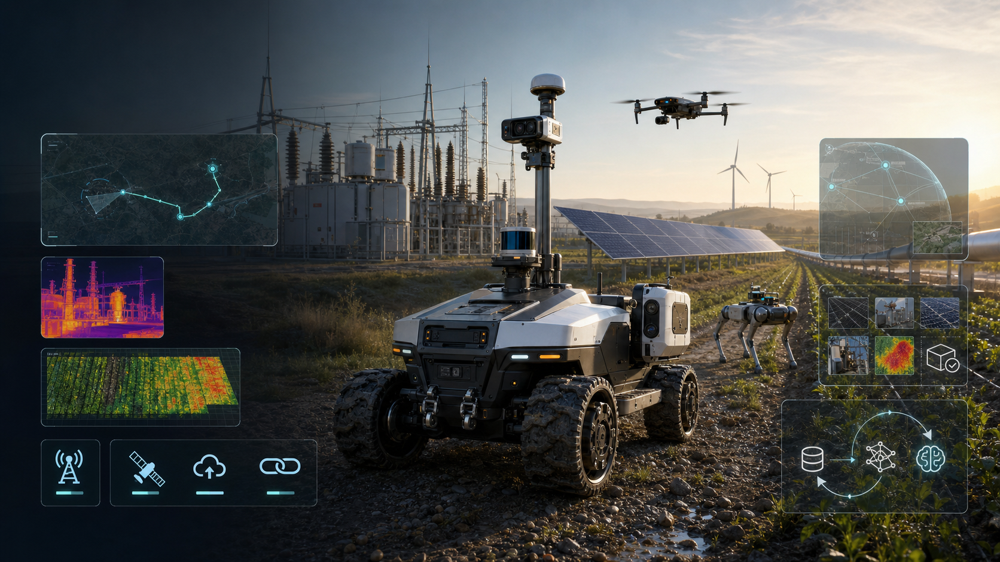

热斑、遮挡、积灰直接影响发电
光伏组件异常、支架遮挡、逆变器状态和清洗优先级，都要转成可量化的发电损失和处理顺序。
01 · Problem
光伏、BESS、变电站和风场越来越分散，站点少人值守，网络不稳定，现场环境复杂。无人机和机器人能采集图像，但运营团队真正需要的是收入损失被发现、工单被派发、维修/清洗被验证、模型持续变准。
光伏组件异常、支架遮挡、逆变器状态和清洗优先级，都要转成可量化的发电损失和处理顺序。
一次人工复查可能要车、人、许可和天气窗口；如果证据不完整，现场还要再跑一趟。
机器人不能把安全、证据和任务完成度都押在云端；弱网下要先传告警、缩略图、轨迹和任务状态。
坡度、泥水、粉尘、强光、夜间、人车混行和危险区，必须进入 ODD 和安全边界。
有价值的数据是位置、资产、传感器、人工判断、机器人动作、维修结果和最终验证。
02 · Current Alternatives Fail
FieldOps 不替代 DJI、Skydio、Spot、ANYmal、Unitree、Raptor Maps 或 DroneDeploy。它把这些系统的输出变成任务、证据、工单、复核和训练数据，补上现场闭环。
航测和热成像覆盖快，但更擅长发现，不擅长地面复核、清洗/维修证明和弱网自主闭环。
四足、轮式、履带和无人机本体各有优势，但客户买的是可验收任务，不是机身参数。
太阳能/风电分析平台能生成缺陷图，但现场仍要派人、派机器人、验证修复和沉淀数据。
工单系统记录流程，但不理解机器人 ODD、传感器证据、弱网同步和模型发布门禁。
Formant、InOrbit、Viam、Foxglove 横向能力强，但缺少新能源资产、GIS、ODD 和验收报告语义。
03 · Solution
第一阶段只承诺 site-controlled ODD 内的监督式巡检：光伏区块、BESS、升压站、围栏和服务道路。FieldOps 把混合机器人、传感器舱、弱网策略、工单系统和 LeRobot 数据飞轮接成一个产品。
导入 GeoJSON、资产清单、禁行区、ODD、传感器计划和验收模板。
无人机、UGV、四足和人工 crew 共享 MissionSpec 与 Evidence API。
把热斑、积灰、遮挡、设备异常和低置信度片段转成工单和复核任务。
交付位置、时间、RGB/thermal、MCAP、模型版本、人工 verdict 和签名。
接管、近失误和复核结果进入 LeRobot episode，再经 AI Hub/QNN 门禁回到边缘。

04 · Why Now
全球光伏装机已接近 3TW，中国光伏装机在 2026-05 已超过 1.26TW。站点越分散，资产越多，客户越不愿意只买图像采集，而是要买缺陷优先级、工单关闭、质保/保险证据和可复用模型。
05 · Product
FieldOps 的第一款产品不是万能野外机器人，而是新能源 O&M 的闭环巡检包：FieldBrain edge kit、SensorPod、MissionMap、ResilientLink、EvidencePackage API 和 TrainRouter。
06 · Product API
每个任务都有路线、ODD、链路策略、安全门禁、证据模板、工单状态和模型版本。所有自动化都标注 supervised、teleop_assist、offline_cache 或 human_verified。
mission_id、site_id、route_geojson、asset_ids、sensor_plan、ODD、evidence template。
max_speed、geofence、no-go、slope、weather、human distance、lost-link action、E-stop。
online、weak、offline、recovered 状态下的 heartbeat、thumbnail、MCAP、teleop priority。
geometry、RGB、thermal、MCAP、model_id、QNN profile、operator verdict、ticket、signature。
task、robot profile、sensor manifest、state/action、intervention、success、failure_type、rights region。
dataset hash、eval report、ONNX、QNN DLC/context、target device、p95 latency、rollback。
07 · Market & Business Model
第一批买家是新能源 O&M 负责人、IPP asset manager、区域运维中心、O&M 承包商和能源 SI。后续扩展到电网、风电、工业园、矿区和农业，但不一开始讲“所有户外机器人”。
30-90 天光伏/新能源 pilot：人民币 100k-500k，覆盖 1-3 个站点或一个 plant block。年度：人民币 200k-1M / site-year，或人民币 3k-12k / MW-year。大型央国企/园区可扩展到人民币 1M-5M+ 项目。
50-150MW pilot：$50k-$125k。年度 evidence layer：$250-$900 / MW-year，站点 minimum $10k-$25k。按 MW、turbine、line-mile、acre 或 mine-shift 扩展，并通过 O&M/service partner 交付。
08 · Competition & Moat
DJI、Skydio、Percepto、DroneDeploy、Raptor Maps、Gecko、ANYbotics、Boston Dynamics、Unitree、AgXeed、Burro、Carbon Robotics 都证明现场机器人需求真实。FieldOps 的复利在任务语义、证据闭环、弱网同步、合规边界和训练数据。
热斑、遮挡、清洗、维修、复核和质保证据带有最终 outcome，比原始视频更有价值。
不同站点的坡度、天气、可见度、人车边界、弱网和 lost-link 行为形成可复用 deployment profile。
机器人、无人机、CMMS、SCADA、GIS、EAM、传感器舱和云训练 provider 越接越快。
QNN profile、latency、memory、thermal、power、rollback 和 replay eval 变成边缘上线门禁。
09 · Why Qualcomm
FieldOps 让 Qualcomm 从“机器人开发板”进入“现场资产运营底座”：本地视觉/热成像/LiDAR 融合、弱网执行、低功耗推理、5G/NTN/专网连接、AI Hub/QNN profile 和长期 OTA 证据都在同一个 workflow 里。
热斑、遮挡、表计、障碍、人员和低置信度事件在本体侧初筛。
专网、公网、Wi-Fi、NTN/卫星补充和 store-and-forward 支撑偏远资产。
ONNX 到 QNN DLC/context/profile，记录 p95 latency、memory、power 和 target runtime。
RB3/QCS6490 用于 demo，RB6 用于 5G-heavy field SKU，IQ10 RRD 进入生产级路线。
无人机、四足、UGV、传感器、能源 SI、O&M service partner 和 GPU provider 围绕 Qualcomm edge 连接。
10 · Demo & Ask
比赛 demo 用小车或仿真 rover + 浏览器 MissionMap：一个 mini solar field、3 条路线、2 个 no-go zone、RGB/thermal mock 图、弱网开关、teleop assist 和 LeRobot export。
加载 GeoJSON route、asset list、ODD card、SafetyEnvelope 和 evidence template。
机器人执行巡检，切换 online / weak / offline / recovered，证明安全和证据留在本地。
发现 mock hotspot 或遮挡，生成 EvidencePackage：map point、RGB/thermal、MCAP、ticket。
低置信度触发 teleop assist，导出 LeRobotEpisode，再展示 AI Hub/QNN release gate。
我们的申请：用 Qualcomm edge kit 打造新能源野巡 reference workflow，让评委看到机器人不是只拍照，而是能把偏远资产异常关闭为可验收、可训练、可部署的现场证据。
FieldOps 不承诺 all-weather、all-terrain、fully autonomous、BVLOS-ready everywhere 或替代法定人工检查。它卖的是明确 ODD 内的监督式野外任务闭环：任务、证据、工单、接管、训练和边缘发布。